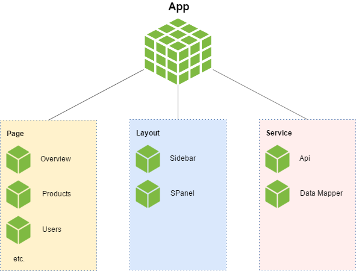
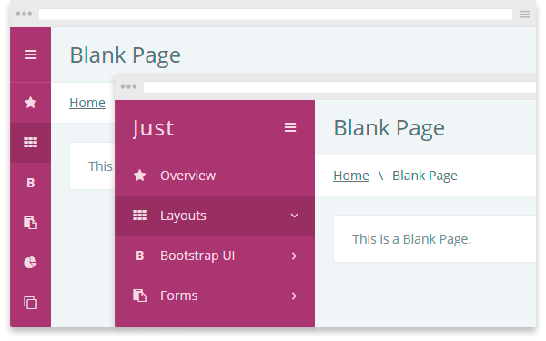
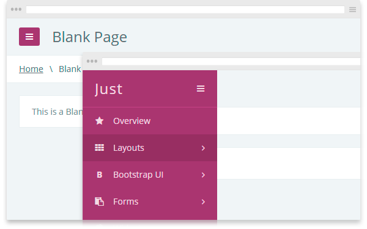
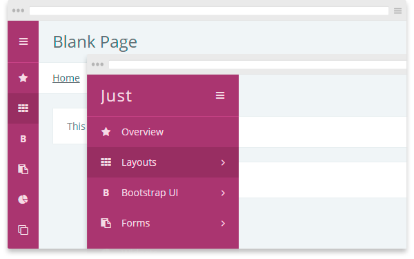
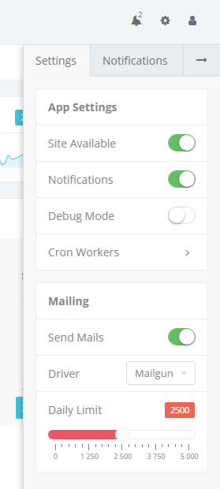

The Just - Admin Bootstrap Template
About
The Just is an Admin Bootstrap Template, created with love and care by AdminBootstrap, on purpose to provide a great UI toolkit for excellent web projects.
Version: 1.0.0Introduction
What is a Bootstrap Template?
A Bootstrap Template or a Bootstrap Theme is a collection of well-designed, cohesive UI components, built on top of the Bootstrap Framework. It means that you first need to read its official documentation before proceeding with the dive.
Also, the template includes a large number of third-party plugins and libraries that have their own documentation. All the links you will be able to find in the Credits section.
For everything else, including compiling and using this Bootstrap Template, read through the docs below.
Overview
The Just is constantly developing. We are working on improving its design, adding new pages and features. With each new version, it becomes more and more advanced, versatile and functional.
Currently, it contains:
- 10 functional pages
- 15 custom widgets
- 25+ suited plugins
What's Included
- Compiled HTML and CSS
- LESS source files
- Structured JavaScript
- Pug Templates
- Gulp Tasks
Files Structure
Within your Bootstrap theme you’ll find the following directories and files, grouping common resources and providing both compiled and minified distribution files, as well as raw source files.
just/ ├── dist/ │ ├── css/ │ │ ├── just.css │ │ ├── just.min.css │ │ ├── libs.common.css │ │ └── libs.common.min.css │ ├── img/ │ ├── js/ │ │ ├── demo/ │ │ ├── modules/ │ │ ├── libs.common.js │ │ └── libs.common.min.js │ ├── libs/ │ └── *.html ├── docs/ ├── src/ │ ├── img/ │ ├── js/ │ │ ├── demo/ │ │ └── modules/ │ │ ├── layout/ │ │ ├── pages/ │ │ ├── services/ │ │ ├── widgets/ │ │ └── app.js │ ├── less/ │ │ ├── blocks/ │ │ ├── bootstrap/ │ │ ├── libs/ │ │ ├── pages/ │ │ ├── vars/ │ │ │ └── colors.less │ │ └── just.less │ └── pug/ ├── gulpfile.js └── package.json
Layout
The template has a fully responsive layout that changes with the width of the window.
Development
If you’re after some customization, we’ve also included all files and configs, which can be used to recompile a template's source files quickly.
Node and NPM
You’ll need to install Node, which comes together with the NPM, a Package Manager we'll use to collect all the dependencies.
Once Node is installed, go to the template root directory, which contains a package.json file, and run the following npm command in your OS command line:
npm instal
Now we have all our dependencies installed.
Gulp Tasks
Gulp.js is the automated build system that we will use for generating HTML from pug and CSS from LESS. It also allows you to automate operations such as resource minification, files concatenation and more. There all of the necessary tasks are in the gulpfile.js.
Build
gulp build
This will start the builder that will process all the files in the ./src folder and will store the result in ./dist.
gulp clean
gulp clean deletes the directory ./dist.
Watch
gulp watch
The command gulp watch will track all the changes in the folder ./src in real-time and automatically update the result in ./dist.
To consistently run the task build and watch you can run just gulp or gulp default.
Local Server
gulp serve
Run the Local Server and host the ./dist directory.
NPM Scripts
These commands are also listed in the NPM scripts section of the package.json file. So you can do:
npm run dev // build + watch
npm run build
npm run watch
npm run clean
npm run serve
Source Code
All the sources are in the ./src directory.
LESS
src/less directory structure:
just/src/less/
├── blocks/
│ ├── widgets/
│ │ └── *.less
│ └── *.less
├── bootstrap/
│ └── *.less
├── libs/
│ └── */
├── pages/
│ └── *.less
├── vars/
│ └── colors.less
└── just.less
Leverage these files and gulpfile.js config to customize your Bootstrap Theme for your exact needs. Change variables, exclude components, and more.
bootstrap/directory contains custom theme's styles that override original Bootstrap styles, but not completely. You still need to includedist/libs/bootstrap/css/bootstrap.csson your pages.just.lessis the entry point for all the theme's LESS files.variables.lessis home to theme’s variables. You can change colors, paddings and other theme properties using this file.
JavaScript
Full description of the JavaScript Application and Components you can find in the relevant sections.
Here is the src/js directory structure:
just/src/js/
├── demo/
└── modules/
├── layout/
├── pages/
├── services/
├── widgets/
└── app.js
Pug Templates
Pug is a powerful template engine, which allows to speed up and simplify the elaboration of HTML projects.
just/src/pug/
├── include/
├── layout/
│ ├── header.pug
│ ├── layout.pug
│ ├── main.pug
│ ├── sidebar.pug
│ └── spanel.pug
└── *.pug
Everything starts with the layout/layout.pug file. It contains the inclusion of separate functional blocks. Then it is inherited by page files located at the root.
Application
The application is clearly structured and divided into modules. Schematically it can be represented as follows.
App Module
The App is the root module of the entire application, which contains links to other modules, services, some basic settings and helper functions. It should be the first on the page among other modules.
<script src="js/modules/app.js"></script>
window.App = function() {
...
return {
classes: {
TableWidget: function() {},
SettingsWidget: function() {},
AmChart: function() {},
...
},
layout: {
Sidebar: {},
SPanel: {}
},
page: {
Overview: {}
},
service: {
api: {},
dataMapper: {}
},
settings: {
firstWeekDay: 1,
...
},
utils: {
formatNumber: function() {},
...
},
...
}
}()
Classes
Classes here are JavaScript functions that emulate OOP principles in a functional style. The App.classes is used as a container of class constructors (functions).
Let's say you are creating a class for a new News widget. In order not to pollute the global window object and always have access to the constructor of the new class, it should be stored in this container.
// Declare a new class
App.classes.NewsWidget = function() { ... }
// Create and store an instance
App.page.overview.widgets.News = new App.classes.NewsWidget()
This is convenient for reusable classes.
Layout
App.layout is the place where you store main components of the layout, such as Sidebar or SPanel. So you have a direct access to them, their state and widgets.
App.layout.Sidebar.isOpen()
App.layout.SPanel.widgets.AppSettings = new App.classes.SettingsWidget('#app-settings', {})
Page
App.page is the place for the current page instance. Usually, it initializes plugins and page widgets, and also binds interface actions.
<script src="js/modules/pages/overview.js"></script>
App.page.overview = function() {
function initWidgets() {}
function initPlugins() {}
function bindUIActions() {}
return {
...
}
}()
Service
Service modules are located in the App.service object.
API
App.service.api is the fake API module that generates random data for demo purpose. Most likely you will want to replace it with a real http-client that will provide an access to your database.
<script src="js/modules/service/api.js"></script>
App.service.api = function() {
return {
getUsers: function(from, to) {
var result = [];
for(var i = 0; i < 200; i++) {
result.push({
date: faker.random.number({ min: from, max: to }),
name: faker.name.findName(),
username: faker.internet.userName(),
status: faker.random.boolean()
})
}
return result;
}
}
}()
// Get users for last 7 days
var from = moment().subtract(7, 'days').valueOf(),
to = moment().valueOf();
console.log(App.service.api.getUsers(from, to));
DataMapper
App.service.dataMapper is the service module that creates map (object) of dates with specified start, end and step period. It is used to build charts when you need to group raw data by certain time periods and fill empty points.
Usage:
<script src="js/modules/service/data-mapper.js"></script>
var users = [
{ name: 'Jhon', date: moment("04-25-2017 13:05", "MM-DD-YYYY HH:mm").valueOf() },
{ name: 'Mike', date: moment("04-25-2017 13:40", "MM-DD-YYYY HH:mm").valueOf() },
{ name: 'Mark', date: moment("04-25-2017 15:30", "MM-DD-YYYY HH:mm").valueOf() },
],
dates = {
from: moment("04-25-2017 13:00", "MM-DD-YYYY HH:mm").valueOf(),
to: moment("04-25-2017 15:59", "MM-DD-YYYY HH:mm").valueOf()
},
// create dates map
map = App.service.dataMapper.createMap(dates.from, dates.to, 'hour'),
result = [];
// created Map from "04-25-2017 13:00" to "04-25-2017 15:59" with an 'hour' period
console.log(map);
--> {
"1493107200000": {
date: 1493107200000 // 04-25-2017 13:00
},
"1493110800000": {
date: 1493110800000 // 04-25-2017 14:00
},
"1493114400000": {
date: 1493114400000 // 04-25-2017 15:00
}
}
// group users by getting a start of an hour of their dates (using underscore.js)
var grouped = _.groupBy(users, function(user) {
return App.service.dataMapper.getStartOfPeriod(user.date, 'hour')
})
console.log(grouped)
--> {
// 04-25-2017 13:00
"1493107200000": [
{ "name": "Jhon", "date": 1493107500000 },
{ "name": "Mike", "date": 1493109600000 }
],
// 04-25-2017 15:00
"1493114400000": [
{ "name": "Mark", "date": 1493116200000 }
]
}
// link our map with grouped data
_.mapObject(grouped, function(entries, date) {
map[date]['users'] = entries.length;
})
// fill map empty points and get result array
_.mapObject(map, function(entry, date) {
if (!entry['users']) {
entry['users'] = 0;
}
result.push(entry);
})
console.log(result);
--> [
{
date: 1493107200000, // 04-25-2017 13:00
users: 2
},
{
date: 1493110800000, // 04-25-2017 14:00
users: 0
},
{
date: 1493114400000, // 04-25-2017 15:00
users: 1
}
]
The whole idea about this is to get the grouped data without empty points for use it in smooth charts. Available periods: hour, day, week, month.
Settings
App.settings is the object with some global settings.
App.settings = {
firstWeekDay: 1,
...
}
$('.daterangepicker').daterangepicker({
locale: {
firstDay: App.settings.firstWeekDay
}
})
Utils
App.utils is where you can store your helper functions.
App.utils = {
formatDate: function(timestamp) {
return moment(timestamp).format('D MMM YYYY HH:mm');
}
}
console.log(App.utils.formatDate(new Date().getTime))
--> "30 Apr 2017 00:15"
Components
Sidebar
The layout component that provides main navigation.
<script src="js/modules/layout/sidebar.js"></script>
Can work in three modes:
collapsible- Inner sidebar that could be collapsed in smaller one.offcanvas- It lives outside the canvas and appears without squeezing the content.collapsible offcanvas- Small sidebar that opens without squeezing the content.
Mode is defined by the body element class. Open state conforms to the sidebar-open body class.
Collapsible
<body class="sidebar-collapsible"> ... </body>
Offcanvas
<body class="sidebar-offcanvas"> ... </body>
Collapsible Offcanvas
<body class="sidebar-collapsible sidebar-offcanvas"> ... </body>
SPanel
The layout component that provides additional side panel for widgets.
<script src="js/modules/layout/spanel.js"></script>
It opens by clicking on an element with the class st-spanel__open.
Closing occurs by clicking on the .st-spanel__close.
To open a specific tab, the toggle element must contain the data-tab="#{tab-id}" attribute.
<button
class="st-spanel__open"
data-tab="#settings">Open Settings
</button>
SPanel module object:
App.layout.SPanel = {
$el: ...,
widgets: {},
isOpen: function() {...},
init: function() {...}
}

Panels
The layout component that provides additional side panel for widgets.
<script src="js/modules/layout/spanel.js"></script>
It opens by clicking on an element with the class st-spanel__open.
Closing occurs by clicking on the .st-spanel__close.
To open a specific tab, the toggle element must contain the data-tab="#{tab-id}" attribute.
<button class="st-spanel__open" data-tab="#settings">Open Settings </button>
SPanel module object:
App.layout.SPanel = {
$el: ...,
widgets: {},
isOpen: function() {...},
init: function() {...}
}
The Just uses custom panels to display content. Panels are great for widgets. They can be combined with various tools like icons, dropdowns, buttons, form elements and tabs.
Basic Markup
<div class="st-panel st-panel--border">
<div class="st-panel__cont">
<!-- Header -->
<div class="st-panel__header">
<div class="fluid-cols">
<div class="expand-col text-ellipsis">
<!-- Title -->
<span class="st-panel__title">
<span>Basic Panel</span>
<small id="tabs-subtitle">Subtitle</small>
</span>
</div>
<div class="min-col">
<!-- Form Elements Here -->
<div class="st-panel__form">
<input class="form-control input-sm" type="text" style="width: 200px;">
</div>
<!-- Tabs Here -->
<div class="st-panel__tabs">
<ul class="nav nav-tabs" role="tablist" data-subtitle="#tabs-subtitle">
<li class="active" role="presentation">
<a href="#preview" role="tab" aria-controls="preview" data-toggle="tab">Preview</a>
</li>
<li role="presentation">
<a href="#source" role="tab" aria-controls="source" data-toggle="tab">Source</a>
</li>
</ul>
</div>
<!-- Tools Here -->
<div class="st-panel__tools">
<div class="st-panel-tool" data-tool="source">
<i class="fa fa-code"></i>
</div>
</div>
</div>
</div>
</div>
<!-- Content -->
<div class="st-panel__content">
...
<!-- If Panel has Tabs -->
<div class="tab-content">
<div class="tab-pane active" role="tabpanel" id="preview">
...
</div>
<div class="tab-pane" role="tabpanel" id="source">
...
</div>
</div>
</div>
<!-- Footer -->
<div class="st-panel__footer">
<div class="fluid-cols">
<div class="expand-col"><span>The Footer Text</span></div>
<div class="min-col"><span class="text-nowrap">Right Text</span></div>
</div>
</div>
</div>
</div>
Panel Tools
Tools are great way to expand your panels functionality.
There are some ready tools that you can use out of the box:
| Tool | Attribute | Description |
|---|---|---|
| hide | data-tool="hide" |
Hide panel from the page. |
| show | data-tool="show" |
Show panel that was hidden. |
| toggle | data-tool="toggle" |
Toggle Hide/Show tool. |
| collapse | data-tool="collapse" |
Apply jQuery slideUp/slideDown function on the panel content element. Also toggle the st-panel--collapsed class for the panel. |
| maximize | data-tool="maximize" |
Expand the panel to the whole window. |
| minimize | data-tool="minimize" |
Restore normal panel size. |
| resize | data-tool="resize" |
Toggle Maximize/Minimize tool. |
Usage:
<script src="libs/panel-tools/panel-tools.js"></script>
Include panel-tools.js plugin (already included in libs.common.js bundle). Specify the data-tool attribute of the element you want to bind the tool. It will be initiated and launched automatically by the click.
If your tool is located outside the panel itself, you can specify the data-tool-target="#{panel-id}" attr with the panel this tool will be applied to.
<div class="st-panel__header" data-tool="collapse">
<div class="fluid-cols">
<div class="expand-col text-ellipsis">
<span class="st-panel__title">
<span>Tools Bar</span>
<small>With Border</small>
</span>
</div>
<div class="min-col">
<div class="st-panel__tools">
<div class="st-panel-tool" data-tool="resize"><i class="fa fa-window-maximize"></i></div>
<div class="st-panel-tool" data-tool="hide"><i class="fa fa-remove"></i></div>
<div class="st-panel-tool" data-tool="refresh" data-tool-target="#other-panel">
<i class="fa fa-refresh"></i>
</div>
</div>
</div>
</div>
</div>
Adding your custom tools:
Let's say you want a tool that will toggle a given class on the panel element. The tool is called "toggl" and the class name is specified via the data-tool-class="" attribute.
// Set the Prototype of the new tool.
$.fn.panel.Constructor.prototype.toggl = function(target) {
var $panel = this.$element,
className = $(target).data('tool-class');
$panel.toggleClass(toggle);
}
// Use new tool <div class="st-panel-tool" data-tool="toggl" data-tool-class="test-class"> <i class="fa fa-question-circle"></i> </div>
Table
The TableWidget is just a wrapper on the cool DataTables plugin. It allows you to move the main control elements of the table, such as info, pagination, search, etc., anywhere you want them on the page. You need to study the official documentation of the DataTables plugin before continuing to work with this widget.
<script src="js/modules/widgets/table.js"></script>
It takes the following options as an object:
| Option | Need | Type | Description |
|---|---|---|---|
table |
required | String | jQuery | HTML table. |
info |
optional | String | jQuery | The element that will contain the table info. |
search |
optional | String | jQuery | The search input. |
length |
optional | String | jQuery | The select element that will control table length. |
pagination |
optional | String | jQuery | The element that will contain table pagination. |
buttons |
optional | String | jQuery | The element that will contain table buttons. |
checkboxes |
optional | Boolean | Can be set to true if the first column of the table contains the checkboxes for selecting rows. |
dataTable |
optional | Object | The DataTables options object that can extend the default widget object that initializes the table. |
Default DataTables options used in widget:
var o = {
'dom': 't',
'pagingType': 'numbers',
'pageLength': $(options.length).val() || 10,
'language': {
'paginate': {
'previous': 'Prev'
}
}
}
if (options.checkboxes) {
o.select = {
'style': 'multi',
'selector': 'td:first-child input[type="checkbox"]'
}
}
Example usage:
<link href="libs/datatables/css/dataTables.bootstrap.css" rel="stylesheet"> <link href="libs/datatables/css/select.bootstrap.css" rel="stylesheet"> <script src="libs/datatables/js/jquery.dataTables.js"></script> <script src="libs/datatables/js/dataTables.bootstrap.js"></script> <script src="libs/datatables/js/dataTables.select.js"></script>
<div class="fluid-cols mb">
<div class="expand-col border-right">
<input id="d-search" class="form-control" type="text" placeholder="Search"/>
</div>
<div class="min-col">
<div id="d-pagination" class="pagination-inline"></div>
</div>
</div>
<table id="d-table" class="table dataTable table-bordered table-filled mb">
<thead>
<tr>
<th class="content-width text-center">#</th>
<th>Name</th>
<th>Count</th>
<th>Status</th>
</thead>
<tbody>
<tr>
<td>
<div class="checkbox condensed">
<input id="d-1" type="checkbox">
<label for="d-1"></label>
</div>
</td>
<td>Mark</td>
<td data-filter="120">120</td>
<td data-filter="1" data-sort="Active">
<span class="label label-success">Active</span>
</td>
</tr>
<tr>
<td>
<div class="checkbox condensed">
<input id="d-2" type="checkbox">
<label for="d-2"></label>
</div>
</td>
<td>Rick</td>
<td data-filter="140">140</td>
<td data-filter="0" data-sort="Disabled">
<span class="label label-danger">Disabled</span>
</td>
</tr>
<tr>
<td>
<div class="checkbox condensed">
<input id="d-3" type="checkbox">
<label for="d-3"></label>
</div>
</td>
<td>Larry</td>
<td data-filter="100">100</td>
<td data-filter="1" data-sort="Active">
<span class="label label-success">Active</span>
</td>
</tr>
</tbody>
</table>
<div id="d-info" class="text-center mt"></div>
var table = new App.classes.TableWidget({
table: '#d-table',
info: '#d-info',
search: '#d-search',
pagination: '#d-pagination',
checkboxes: true,
dataTable: {
'columnDefs': [
{ 'orderable': false, 'targets': [0] }
],
'pageLength': 3,
'pagingType': 'first_last_numbers',
'language': {
paginate: {
first: '«',
previous: '‹',
next: '›',
last: '»'
}
},
'order': [[1, 'asc']]
}
});
Result:
The TableWidget function returns an object that you can use later to access the instance of the widget:
var table = new App.classes.TableWidget({...})
console.log(table)
--> {
dataTable: [DataTables instance],
$table: [jQuery Object],
$info: [jQuery Object],
$length: [jQuery Object],
$search: [jQuery Object],
$pagination: [jQuery Object],
$buttons: [jQuery Object],
clearSearch: function () {},
getSelected: function () {}
}
Table Filter
The TableFilter is an addition to the TableWidget that implements filtering data in a table by the contents of its cells.
<script src="js/modules/widgets/table-filter.js"></script>
Let's extend the previous example with a container of filters.
<div class="container-fluid no-paddings">
<div class="row">
<div class="col-md-6 mb">
<div class="form-group">
<div class="slider-default">
<input id="d-count" class="hide" type="text"/>
</div>
</div>
</div>
<div class="col-md-6">
<select id="d-status" style="width: 100%"></select>
</div>
</div>
</div>
To initialize new filters, create an instance of the TableFilter and configure its options:
var table = new App.classes.TableWidget({...});
var filter = new App.classes.TableFilter({
dataTable: table.dataTable,
filters: {
count: {
type: 'slider-range',
el: '#d-count',
column: 2
},
status: {
type: 'select',
el: '#d-status',
column: 3,
placeholder: 'All'
}
}
});
That is what we have as a result:
Available options:
| Option | Need | Type | Description |
|---|---|---|---|
dataTable |
required | DataTables Instance | Its what the DataTables plugin returns after initialization. |
filters |
required | Object | The list of the filters. |
types |
optional | Object | The list of custom filter types. |
Each filters item is an Object that defines a particular filter. It should contain at least these fields:
{
type: 'select', \\ { string } - one of the defined filter types
el: '#d-status', \\ { string } - css-selector of the control element
column: 2 \\ { number } - number of column that filter will be applied to
}
It may contain any other fields as well. That could be useful while defining custom filter types.
The types is a optional Object. With it, you can define your own filter types. Like following:
types: {
radio: {
init: function(f, dt) {
$(f.el).on('change', function() {
dt.draw();
})
},
reset: function(f, dt) {
$(f.el).prop('checked', false);
$(f.el).filter('input[value="-1"]').prop('checked', true).change();
},
compare: function(f, dt, row) {
var checked = $(f.el).filter(':checked').val(),
value = row[f.column];
if (( checked == '-1' ) || (checked == value)) {
return true;
}
return false;
}
}
}
Each type is an Object that contains 3 functions:
| Function | Arguments | Description |
|---|---|---|
init(f, dt) |
f { Object } - The filter item described above.
dt { Object } - DataTables Instance.
|
Initializes control, sets up a change handler. |
reset(f, dt) |
f { Object } - The filter item described above.
dt { Object } - DataTables Instance.
|
Sets the initial value of the filter. |
compare(f, dt, row) |
f { Object } - The filter item described above.
dt { Object } - DataTables Instance.
row { Array } - DataTables row data.
|
Compares the value of the filter with the contents of the columns during the filtering process. |
You can learn more about the operation of this widget using the example pages: dist/app-products.html and dist/app-users.html.
Credits
Here a list of all third-party libraries that are present in the template.
| Libs | Description |
|---|---|
| amCharts | JavaScript Charts & Maps. |
| Awesome Bootstrap Checkbox | Bootstrap Checkboxes & Radios. |
| Bootbox.js | Alert, confirm and flexible dialogs for the Bootstrap. |
| Bootstrap | Most popular HTML, CSS, and JS framework for web. |
| Date Range Picker | Date Range Picker for Bootstrap. |
| Bootstrap Tabdrop | Responsive Bootstrap Tabs. |
| Bootstrap Validator | Form validator plugin for Bootstrap. |
| clipboard.js | A modern approach to copy text to clipboard. |
| Cropper | A simple jQuery image cropping plugin. |
| DataTables | Table plug-in for jQuery. |
| Bootstrap Dual Listbox | Responsive dual listbox widget. |
| faker.js | Generate massive amounts of fake data. |
| fancyBox | Fancy jQuery Lightbox Alternative. |
| Font Awesome | The iconic font and CSS toolkit. |
| highlight.js | Syntax highlighting for the Web. |
| Holder.js | Holder renders image placeholders entirely in browser. |
| Ion.RangeSlider | Range slider with skin support. |
| Jasny Bootstrap | The missing components for Bootstrap. |
| jQuery | Fast, small, and feature-rich JavaScript library. |
| jQuery Sparklines | Generates sparklines (small inline charts). |
| jQuery Scrollbar | jQuery CSS Customizable Scrollbar. |
| Moment.js | Manipulate and display dates and times in JavaScript. |
| Select2 | The jQuery replacement for select boxes. |
| SimpleMDE | Simple, embeddable, and beautiful JS markdown editor. |
| Switchery | iOS 7 style switches for your checkboxes. |
| Underscore | A whole mess of useful functional programming helpers. |
Support
That's it. Hope you will enjoy our template. If you will have any issues you can contact us to support@adminbootstrap.com or join our Support Chat.